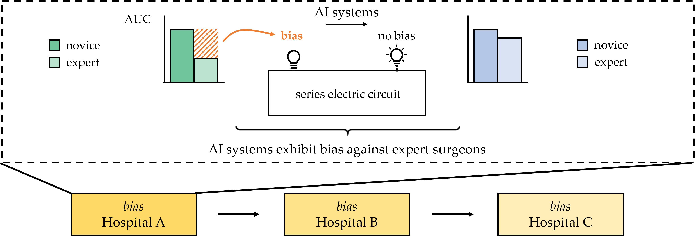
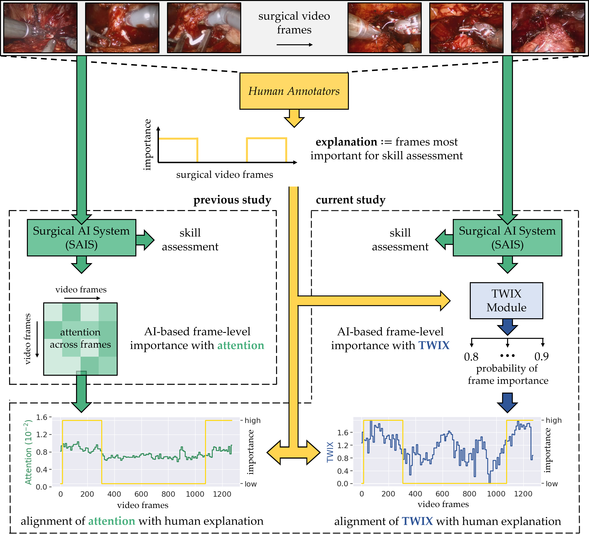
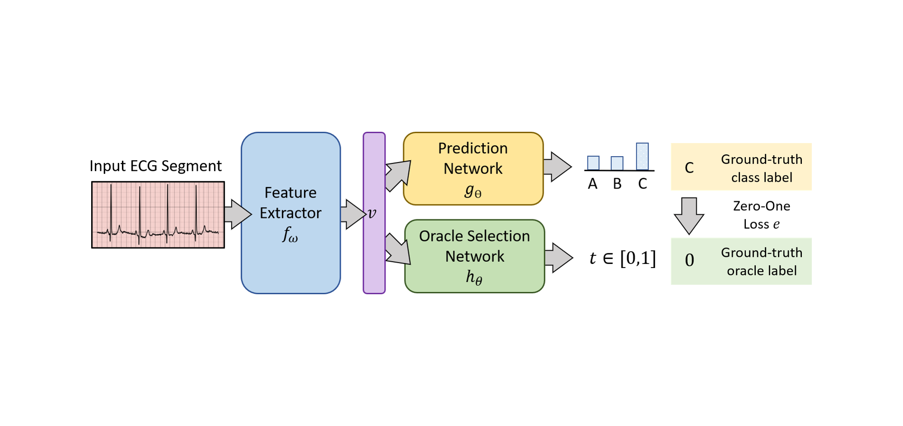
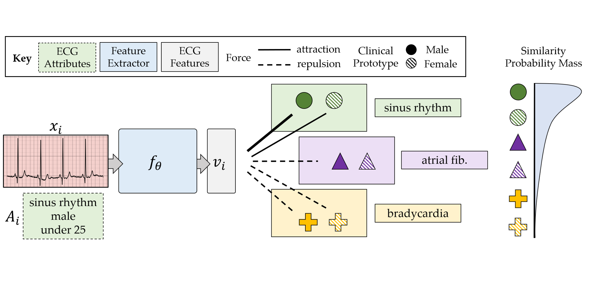
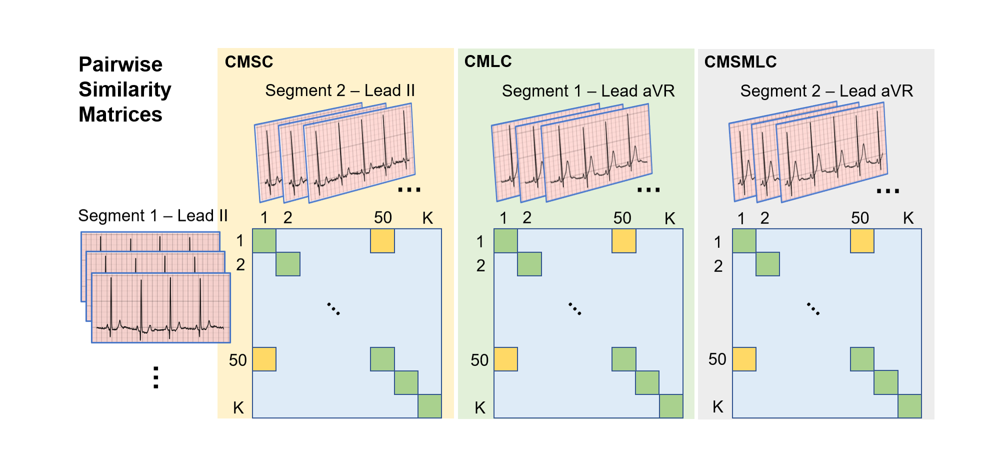
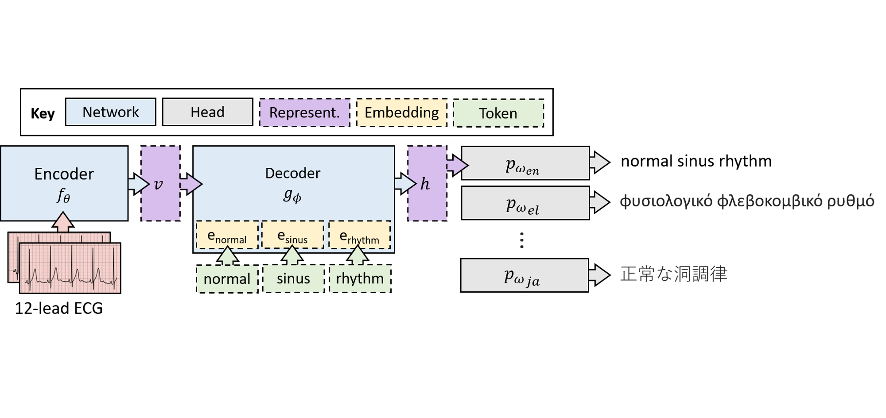
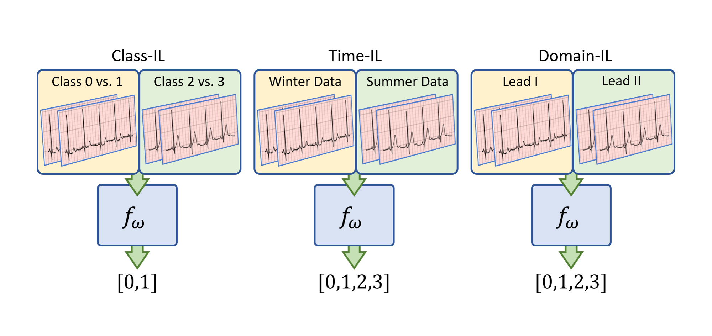
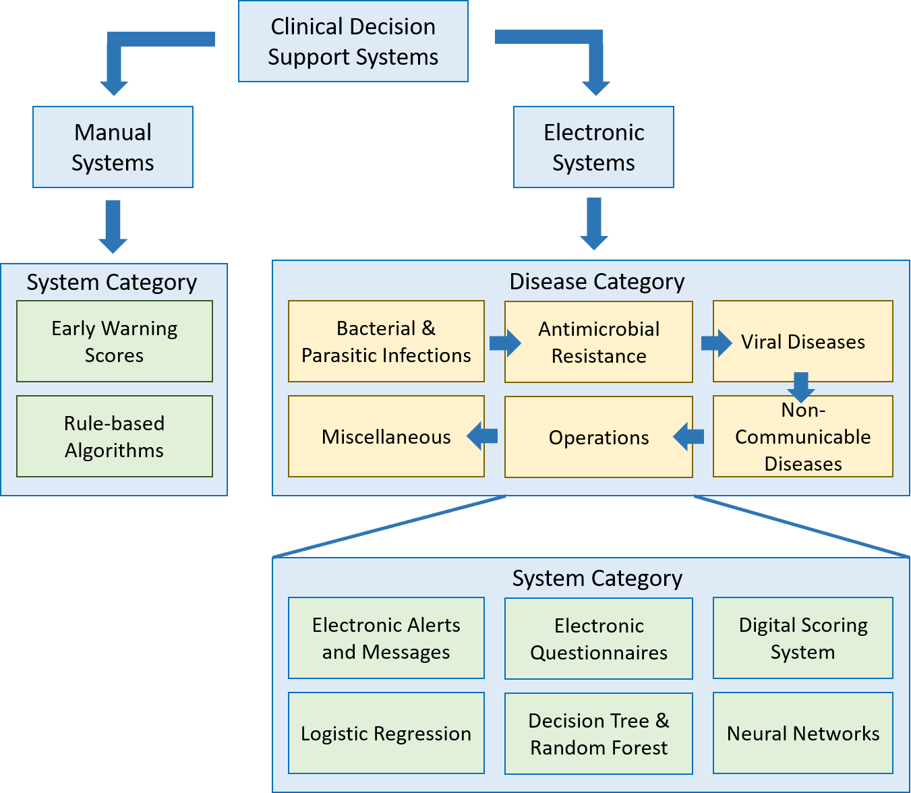
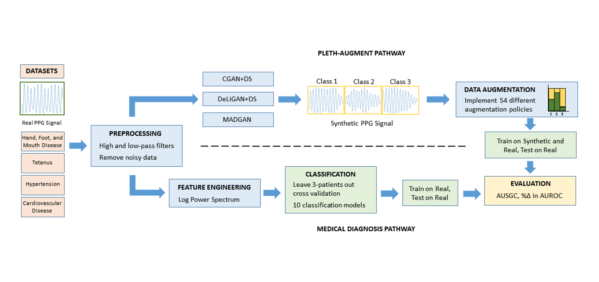

A framework for evaluating clinical artificial intelligence systems without ground-truth annotations
Nature Communications, 2024
Publications in top-tier machine learning conferences and high-impact scientific journals. ICML, NeurIPS, Nature, and beyond.
No publications match this filter.
Nature Communications, 2024

Nature Biomedical Engineering, 2023

npj Digital Medicine, 2023

Communications Medicine, 2023

Transactions on Machine Learning Research (TMLR) 2023

International Conference on Machine Learning (ICML) 2022
Spotlight Presentation

Neural Information Processing Systems (NeurIPS) 2021

International Conference on Medical Image Computing and Computer Assisted Intervention (MICCAI) 2021

International Conference on Machine Learning (ICML) 2021
Spotlight Presentation



IEEE Reviews in Biomedical Engineering, 2020

IEEE Journal of Biomedical and Health Informatics, 2020